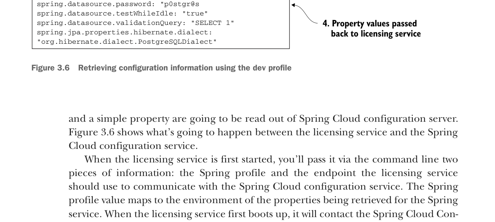

and a simple property are going to be read out of Spring Cloud configuration server. Figure 3.6 shows what’s going to happen between the licensing service and the Spring Cloud configuration service.

Retrieving configuration information using the dev profile
When the licensing service is first started, you’ll pass it via the command line two pieces of information: the Spring profile and the endpoint the licensing service should use to communicate with the Spring Cloud configuration service. The Spring profile value maps to the environment of the properties being retrieved for the Spring service. When the licensing service first boots up, it will contact the Spring Cloud Config service via an endpoint built from the Spring profile passed into it. The Spring Cloud Config service will then use the configured back end config repository (filesystem, Git, Consul, Eureka) to retrieve the configuration information specific to the Spring profile value passed in on the URI. The appropriate property values are then passed back to the licensing service. The Spring Boot framework will then inject these values into the appropriate parts of the application.